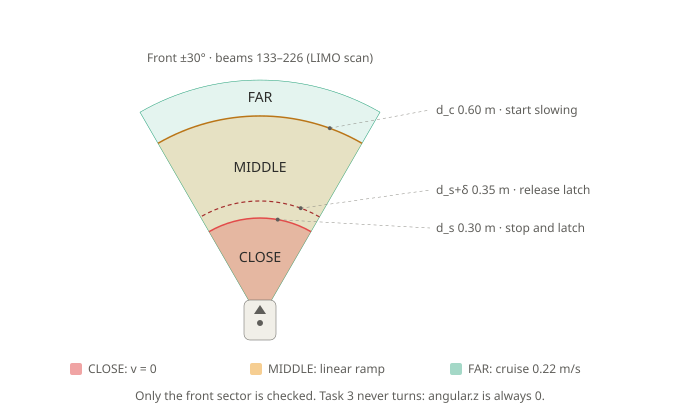
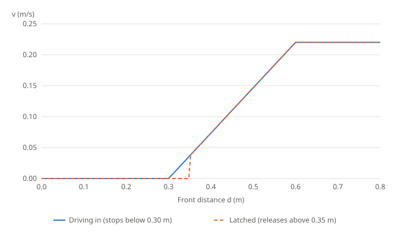
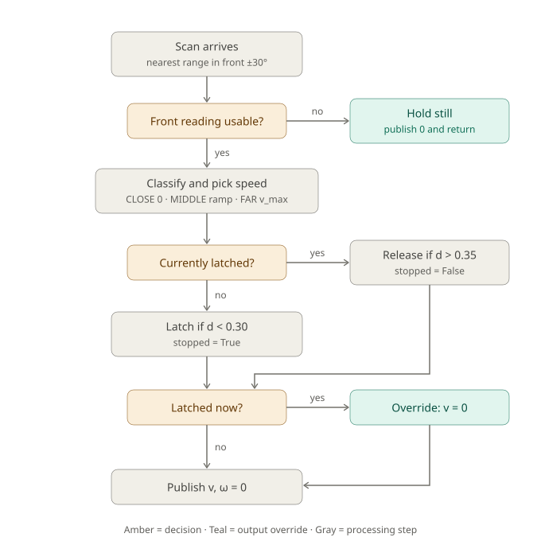

Safe stop
Teaching visuals for workshop task 3 (safe_stop_SOLUTION.py). All values use the default node parameters.
Front sector and stop zones
One wedge, three bands. The robot cruises when far, ramps down in the middle band, and stops when close.

Speed law and hysteresis
The ramp is a straight line through (0.30 m, 0) and (0.60 m, 0.22 m/s). Once latched, the robot stays stopped until the obstacle is beyond 0.35 m, then jumps back onto the ramp at about 0.037 m/s.

Decision flow of on_scan

Simulator
Each slider movement counts as one scan, so the latch persists between moves. Drag the distance below 0.30, then slowly back up and watch where it releases.
Why hysteresis: a noisy approach
The robot drives up to a wall, sits right at the stop distance for three seconds, then the wall moves away. Each scan adds random sensor noise. Compare the published speed with and without the latch, and count how often the robot restarts.